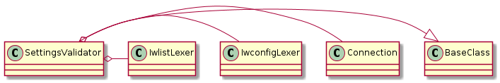

The Settings Validator
The Settings Validator checks the AP for settings to see if they are correct.

The Channel
Based on an explanation given by H. Wong, the following table was taken from WikiPedia and will be used to check the Atheros (which has two antennae).
Data Rates
| MCS Index |
Spatial Streams |
20MHz (800 NS GI) |
40 MHz (400 NS GI) |
|---|
| 15 |
2 |
130.00 |
300.00 |